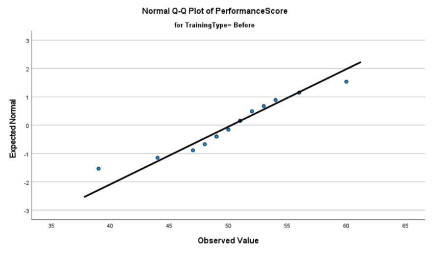
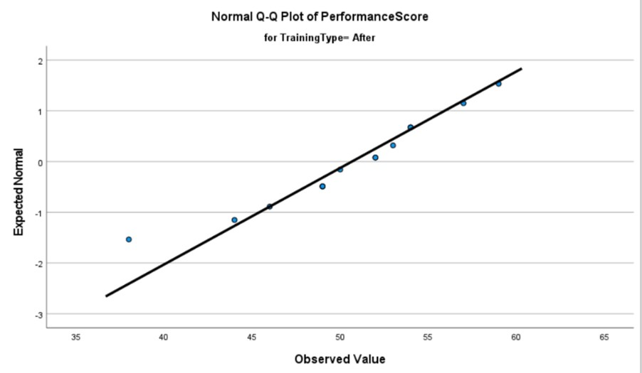
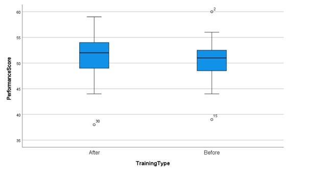
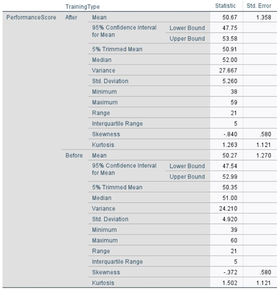
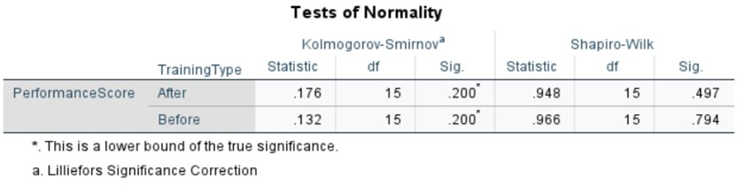
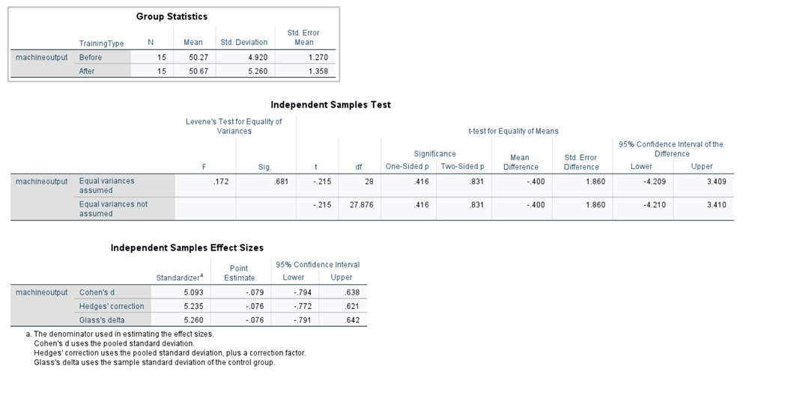
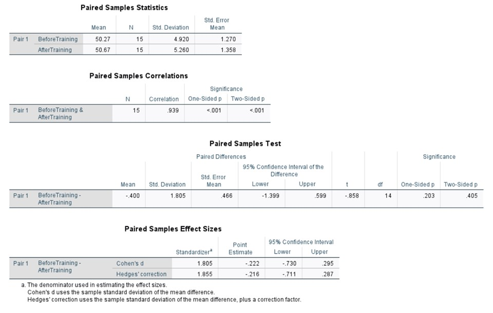
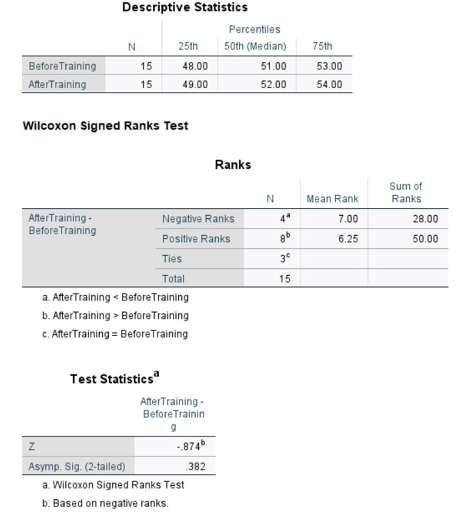

Introduction
This project intiated simulating two sets of 15 employees, one set who have not attended the training programme and another set who have attended the training. I will then measure the impact of the training course and see if, as a manager, it would be viable to install for all employees in the business. I will then present the results from the relevant tests in an understandable report, including reccomendations for the managers to consider.
My employee simulation results:
| Employee group | No Training | Attended Training |
|---|---|---|
| 1 | 53 | 54 |
| 2 | 60 | 57 |
| 3 | 52 | 54 |
| 4 | 51 | 53 |
| 5 | 44 | 46 |
| 5 | 47 | 44 |
| 7 | 51 | 52 |
| 8 | 49 | 49 |
| 9 | 54 | 54 |
| 10 | 48 | 50 |
| 11 | 56 | 59 |
| 12 | 49 | 49 |
| 13 | 51 | 52 |
| 14 | 50 | 49 |
| 15 | 39 | 38 |
Graphical and Statistical summary.
Initially, I conducted a descriptive statistical and graphical summary of the two sets of data. This allowed me to check any assumptiuons made and assure the data was normally distributed

The pre-training histogram exhibits a nearly ideal normal distribution, characterized by a symmetrical bell-shaped curve. In contrast, the post-training histogram reveals a marked shift in performance scores, resulting in an asymmetrical distribution. This transformation suggests the possibility of a bimodal distribution rather than a singular normal distribution. The presence of two distinct peaks in the graph supports this inference. Comparing the pre- and post-intervention histograms, we observe that the training intervention has altered the distribution of employee performance scores. Prior to training, scores clustered around 47-48, whereas post-training, a notable shift occurs, with a new peak emerging around 53-54. Although the mean remains relatively stable, there is a discernible increase in the frequency of scores in the higher 50s range. This change manifests as a bimodal distribution, deviating from the initial unimodal, normal distribution.


The pre-training Q-Q plot reveals two distinct outliers that deviate from the expected distribution pattern. These isolated data points can be reasonably interpreted as anomalies, given the absence of a recurring trend among the outliers. It is noteworthy that these outliers exert a significant influence on the line of best fit; their removal would result in a steeper slope that more closely adheres to the normal distribution. In contrast, the post-training Q-Q plot exhibits only a single outlier, further supporting the hypothesis that these deviations are anomalous rather than indicative of a systemic trend. Moreover, this solitary outlier appears to have a minimal impact on the line of best fit, suggesting a more robust overall distribution in the post-intervention data.

The pre- and post-intervention box plots both exhibit symmetry, suggesting normal distributions for both data sets. In the post-intervention box plot, we observe an increase in the median value and a broader range of scores. These changes indicate a potential positive impact of the training intervention on employee performance. Specifically, the upward shift in the median and the expanded range of scores suggest that the training may have contributed to an overall improvement in performance across the employee cohort.

No Training Analysis:
Prior to the training intervention, the sample exhibited a mean performance score of 50.27, with a median of 51. The proximity of these values suggests a relatively symmetric distribution of scores. The 95% confidence interval for the population mean was calculated to be 47.54 to 52.99, indicating a moderate level of precision in our estimate of the true population parameter.
No Training Analysis:
Prior to the training intervention, the distribution exhibited a slight negative skew (skewness = -0.372, SE = 0.580). This indicates a marginal asymmetry in the distribution, with a tendency towards a longer tail on the left side of the distribution curve. The kurtosis value (kurtosis = 1.502, SE = 1.121) suggests a leptokurtic distribution, characterized by heavier tails and a higher, sharper peak compared to a normal distribution.
No Training Analysis:
Prior to the training intervention, the sample exhibited a mean performance score of 50.27, with a median of 51. The proximity of these values suggests a relatively symmetric distribution of scores. The 95% confidence interval for the population mean was calculated to be 47.54 to 52.99, indicating a moderate level of precision in our estimate of the true population parameter.
Training Analysis:
Following the training intervention, the 95% confidence interval for the population mean shifted slightly to 47.75 - 53.58. The overlap between the pre- and post-training confidence intervals suggests that the training effect, if present, may not be statistically significant at the α = 0.05 level. However, further statistical testing would be necessary to confirm this inference.
Distributional Characteristics:
To assess the normality assumption crucial for many parametric statistical tests, we examined the skewness and kurtosis of both pre- and post-training distributions. The skewness values for both datasets fall within the conventionally accepted range of -2 to +2, suggesting that the distributions do not deviate substantially from normality in terms of symmetry.
No Training Analysis:
Prior to the training intervention, the distribution exhibited a slight negative skew (skewness = -0.372, SE = 0.580). This indicates a marginal asymmetry in the distribution, with a tendency towards a longer tail on the left side of the distribution curve. The kurtosis value (kurtosis = 1.502, SE = 1.121) suggests a leptokurtic distribution, characterized by heavier tails and a higher, sharper peak compared to a normal distribution.
Training Analysis:
Following the training intervention, notable changes were observed in the distributional characteristics. The negative skewness became more pronounced (skewness = -0.840, SE = 0.580), indicating an increased asymmetry and a further elongation of the left tail of the distribution. Conversely, the kurtosis value decreased slightly (kurtosis = 1.263, SE = 1.211), suggesting a minor reduction in the peakedness of the distribution, though it remained leptokurtic.

The Shapiro-Wilk test was employed to assess the normality of the data distributions for both the pre-training and post-training conditions. This test is particularly relevant for our statistical and graphical analysis as it provides a formal method to evaluate the normality assumption, which is crucial for the application of many parametric statistical techniques.
The Shapiro-Wilk test was employed to assess the normality of the data distributions for both the pre-training and post-training conditions. This test is particularly relevant for our statistical and graphical analysis as it provides a formal method to evaluate the normality assumption, which is crucial for the application of many parametric statistical techniques.
Hypothesis:
The null hypothesis (H₀) for the Shapiro-Wilk test posits that the sample data are drawn from a normally distributed population. The alternative hypothesis (H₁) states that the sample data are not drawn from a normally distributed population.
The Shapiro-Wilk test assumes that:
The observations are independent and identically distributed
The scale of measurement is at least ordinal.
Results and Interpretation:
For the pre-training data, the Shapiro-Wilk test yielded a p-value of 0.794, while the post-training data resulted in a p-value of 0.497. In both cases, the p-values exceed the conventional significance level of α = 0.05, indicating a failure to reject the null hypothesis. Consequently, we do not have sufficient evidence to conclude that either dataset deviates significantly from a normal distribution.
Independant Samples T-Test

To assess the homogeneity of variances, we employed Levene's test with the following hypotheses:
Given the established equality of variances, we can proceed with the interpretation of the independent samples t-test results under the assumption of homoscedasticity. Examining the row labeled 'equal variances assumed' in the test output, we can evaluate the evidence against the null hypothesis. The 95% confidence interval for the difference in means spans from -4.21 to 3.41 (both values rounded to two decimal places). This relatively wide interval encompasses zero, which precludes us from asserting a statistically significant difference between the two datasets at the α = 0.05 level.
To assess the homogeneity of variances, we employed Levene's test with the following hypotheses:
Null hypothesis (H₀): σ²₁ = σ²₂ (equal population variances)
Alternative hypothesis (H₁): σ²₁ ≠ σ²₂ (unequal population variances)
The resulting p-values for both datasets exceed the conventional significance level of α = 0.05, allowing us to maintain the assumption of equal variances. Specifically, the obtained p-value of 0.681 fails to provide sufficient evidence against the null hypothesis of homoscedasticity. However, it is crucial to note that this outcome does not definitively prove the truth or falsehood of H₀, but rather indicates a lack of evidence to reject it.
For the primary analysis, we formulated the following hypotheses:
Null hypothesis (H₀): μᵦ = μₐ (no performance increase post-training)
Alternative hypothesis (H₁): μᵦ < μₐ (performance increase post-training)
Where μᵦ represents the population mean performance before training, and μₐ represents the population mean performance after training.
It is worth noting that while a formal test of normality is often recommended, the Central Limit Theorem suggests that for samples with n < 30, as is the case for both of our datasets, the sampling distribution of the mean can be approximated by a normal distribution. This theoretical underpinning supports the application of parametric tests without an explicit normality check. However, visual inspection of the data distribution and consideration of potential outliers remain prudent practices to ensure the robustness of our statistical inferences.
Given the established equality of variances, we can proceed with the interpretation of the independent samples t-test results under the assumption of homoscedasticity. Examining the row labeled 'equal variances assumed' in the test output, we can evaluate the evidence against the null hypothesis. The 95% confidence interval for the difference in means spans from -4.21 to 3.41 (both values rounded to two decimal places). This relatively wide interval encompasses zero, which precludes us from asserting a statistically significant difference between the two datasets at the α = 0.05 level.
The inclusion of zero within the confidence interval is particularly noteworthy, as it indicates that a null effect—that is, no difference between the populations from which these samples were drawn—is consistent with the observed data. Consequently, we do not have sufficient evidence to reject the null hypothesis of no difference between the population means.
This failure to reject the null hypothesis should not be interpreted as proof of equivalence between the two groups, but rather as an inability to detect a statistically significant difference given the current sample size and variability in the data. It is prudent to consider the practical significance of the observed differences, if any, in conjunction with this statistical result. Furthermore, this outcome underscores the importance of considering statistical power and effect size in the design and interpretation of future studies on this topic.
Using t^2/(t^2+(N1+N2-2)) we can calculate the eta squared. With this calculation we get 〖0.215〗^2/(〖0.215〗^2+(15+15-2)). This gives us a total of 0.0016, using Cohen’s guidelines, this is an extremely small effect, this means only 1% of the performance score is impacted through training.
Paired T-Test
For this section and the following, our simulated results are paired. For example, this means that employee group one is now ONE employee, showing their results before and after performing training.

A paired samples t-test was conducted to evaluate the effect of training on employee performance scores. This test was chosen due to the repeated measures design, where the same 15 employees were assessed before and after the training intervention.
A paired samples t-test was conducted to evaluate the effect of training on employee performance scores. This test was chosen due to the repeated measures design, where the same 15 employees were assessed before and after the training intervention.
Hypothesis:
Null hypothesis (H₀): μd = 0 (The mean difference in performance scores before and after training is zero)
Alternative hypothesis (H₁): μd ≠ 0 (The mean difference in performance scores before and after training is not zero)
Where μd represents the population mean of the differences between paired observations.
Assumptions:
1. The paired differences are normally distributed in the population.
2. The sample is representative of the population.
3. The dependent variable (performance scores) is measured on a continuous scale.
4. There are no significant outliers in the differences between pairs.
Once again with this data we will calculate the effect size for the paired sample t-test. Using a slightly different formula: t^2/(t^2+(N-1)) . We then implement our results to the formula: 〖-0.858〗^2/(〖-0.858〗^2+(15-1)). After running this formula, we get and eta value of 0.056 which using Cohen’s guidelines shows us that there is moderate effect of training on the performance score.
The analysis yielded a two-tailed p-value of 0.405, which exceeds the conventional significance level of α = 0.05. This result suggests that there is insufficient evidence to reject the null hypothesis, indicating no statistically significant difference between the pre- and post-training performance scores.
Examining the descriptive statistics, we observe a modest increase in the mean performance score of 0.4 units following the training intervention. However, this observed difference lacks statistical significance, as indicated by the p-value. It is crucial to note that while the mean score increased slightly, this change cannot be unequivocally attributed to the training program alone. Extraneous variables, such as individual employee factors, workplace dynamics, or other external influences, may have contributed to this marginal improvement.
The lack of statistical significance, coupled with the small observed difference, suggests that the training program's effectiveness in improving employee performance may be limited or requires further investigation. Future research might benefit from larger sample sizes, more sensitive performance metrics, or the inclusion of control variables to account for potential confounding factors.
Non-Parametric Tests

To analyze the efficacy of the training intervention on employee performance, we employed the Wilcoxon signed-rank test, a non-parametric statistical procedure designed for paired observations. This test was selected due to its robustness in scenarios where the assumptions of parametric tests may not be fully met, particularly when dealing with ordinal data or when the normality assumption is questionable.
After conducting an independent samples t-test, paired t-test and Wilcoxon signed rank test, we must evaluate which is the best for understanding the improvement of employees.
This report summarizes the statistical analysis of our recent training program's effectiveness. While the analysis is thorough, the results are somewhat nuanced. Here's a concise overview focused on the key points relevant to your decision-making: